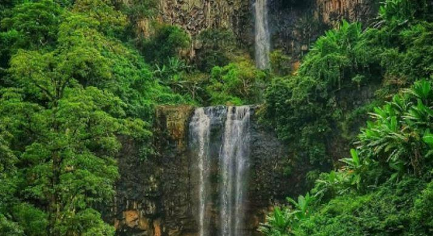

Travella
Gujarat
Telangana
Bihar
Logout
Travella!
Gujarat
The Statue of Unity is the world's tallest statue, with a height of 182 metres, located near Kevadia in the state of Gujarat, India. It depicts Indian statesman and independence activist Sardar Vallabhbhai Patel.
Gujarat Science City is a science education and entertainment centre located in Ahmedabad, Gujarat. It has exhibitions on science, space, energy park, life science park, planet earth, hall of science, musical fountain, thrill ride, plants, an aquarium, an aviary, and a butterfly park.
Telangana
Snow World is an amusement park located in Hyderabad, Telangana, India within an area of about 2 acres. Located beside Indira Park and along the Hussain Sagar lake, the park was inaugurated on 28 January 2004.
Lumbini Park, officially T. Anjaiah Lumbini Park, is a small public, urban park of 3 hectares adjacent to Hussain Sagar in Hyderabad, India.
Bihar

Kakolat Waterfall is a picturesque waterfall in Nawada district, popular with tourists due to its scenic surroundings. The falls also play a role in Hindu mythology, when according to legend an ancient king was turned into a python by a rishi's curse and lived within the falls.
Patna Museum is the state museum of the Indian state of Bihar. The artifacts from ancient India era to 1764 have now been transferred to Bihar Museum.